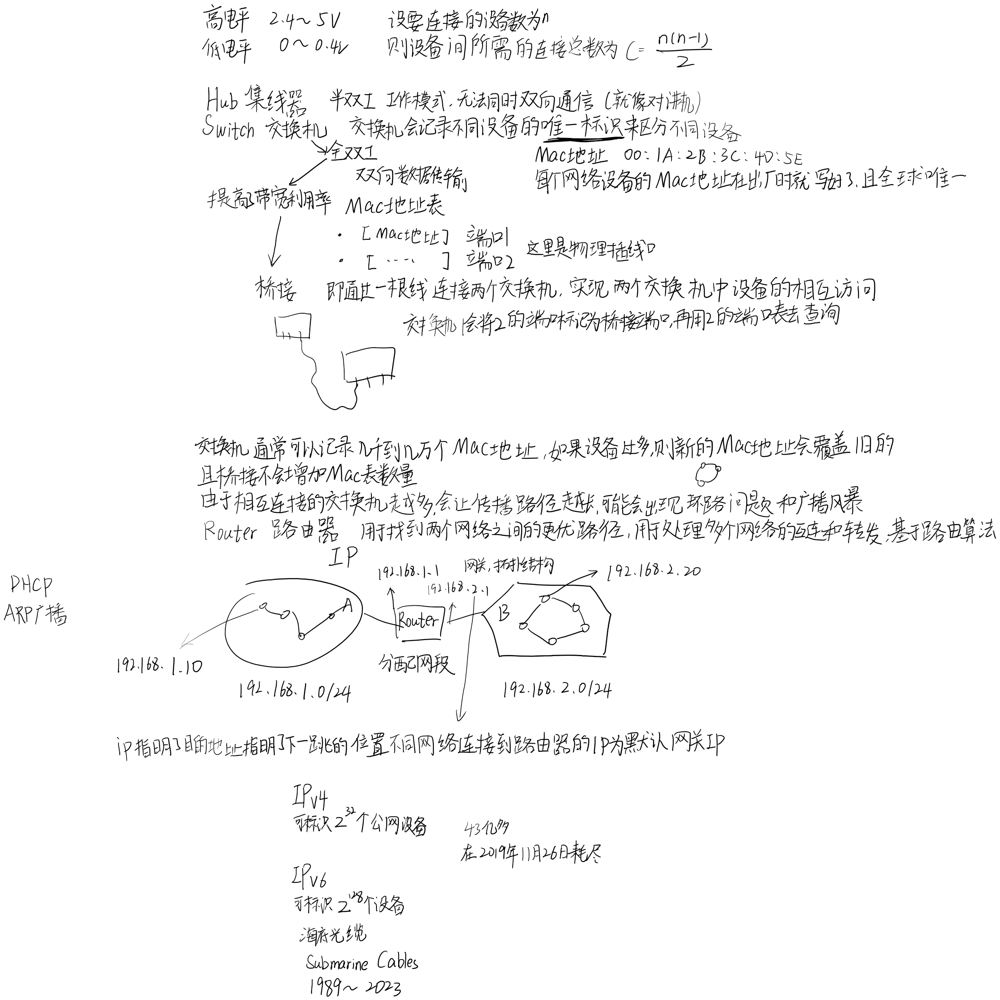

计算机网络

7层OSI参考模型:物联网淑慧试用
- 应用层
- 表示层
- 会话层
- 传输层
- 网络层
- 链路层
- 物理层
4层TCP/IP参考模型：
- 应用层（Application Layer）
- 应用层是TCP/IP协议族的最高层，负责提供各种网络应用程序和服务的接口
- 在应用层，包括HTTP、FTP、SMTP等各种应用协议，它们定义了数据的格式和交换方式，使得应用程序之间可以进行通信和数据交换
- 传输层（Transport Layer）
- 传输层负责提供端到端的数据传输服务，实现数据的可靠传输和流量控制
- 在传输层，主要有两个常用的协议：TCP（传输控制协议）和UDP（用户数据协议）。TCP提供可靠的、面向连接的数据传输，而UDP提供不可靠的、面向无连接的数据传输
- 网络层（Internet Layer）
- 网络层负责实现数据包的路由和转发，实现不同网络之间的通信
- 在网络层，主要有IP（Internet Protocol）协议，它定义了数据包的格式和交换方式，使得数据可以在不同的网络之间传输
- 链路层（Linke Layer）
- 链路层负责实现相邻节点之间的数据传输和通信，包括物理层面的数据传输和数据链路控制
- 在链路层，主要有以太网、Wi-Fi、PPP等各种链路层协议，它们定义了数据的传输方式和传输介质，使得数据可以在物理网络上进行传输